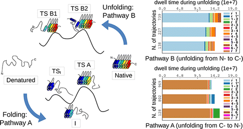

-

Mapping the Topography of a Protein Energy Landscape
Hutton, Wilkinson, Faccin, Sivertsson, Pelizzola, Lowe, Bruscolini, Itzhaki, JACS, 2015, 137 (46), pp 14610–14625 -

Analysis of the Equilibrium and Kinetics of the Ankyrin Repeat Protein Myotrophin
Faccin, Bruscolini, Pelizzola, J Chem Phys 134:075102 (2011) ArXiv -

TnovoMS
T-novoMS is a combined de-novo/database-search tool for MSMS tandem spectra identification.